Additional Configuration Parameters
The following section describes additional configurations such as state texts, alarms, Object Model's and so on for data points.
Data Types
To better understand the concept of SubIndex, you must first understand the possible data types which can be assigned to a data point.
Modbus does not specify or deal with the data type of numbers. The protocol caters to reading of registers, each of which is a set of two bytes. In a data read request, the client can ask for one or more registers from the device. Such read requests contain two key elements; the start address, and the number of registers to read. Request to read one analog register (function type 0x03 or 0x04) responds with two bytes of data, and similarly, a request to read two registers responds with four bytes of data. The client receiving these register values, or bytes, must interpret the bytes as a particular numeric type. The possible data types are as follows:
Data type | Syntax |
Integer (2 bytes) | Int16 |
Unsigned integer (2 bytes) | Uint16 |
Byte (1 byte) | Byte |
Boolean (1 byte) | Bool |
Floating point (4 bytes) | Float32 |
Enumeration (2 bytes) | Enum |
Double precision (8 bytes) | Float64 |
Integer 32 bit (4 bytes) | Int32 |
Unsigned integer 32 bit (4 bytes) | Uint32 |
Blob (Custom Size) | Blob |
String (Custom Size) | String |
While defining a data point in the CSV file, you must specify the start address and the data type so that the driver will read the appropriate number of registers and correctly represent the value. For example, specifying function type 3 and offset 0 (address 40001), along with a data type float32 will cause the driver to read two registers (because four bytes are required) and interpret the returned bytes as IEEE 32 bit floating point number.
The Offset value cannot be the same for points with Direction as Output.
The following table shows the mapping between DPE type, direction, function code and the transformation.
DPE Type | Direction | Function | Transformation |
PvssUint | Input | 3 | uint16 |
uint32 | |||
byte | |||
4 | uint16 | ||
uint32 | |||
byte | |||
Output | 6 | uint16 | |
16 | uint16 | ||
uint32 | |||
byte | |||
PvssBool | Input | 1 | boolean |
2 | boolean | ||
3 | boolean | ||
4 | boolean | ||
Output | 5 | boolean_as_byte | |
6 | boolean | ||
15 | boolean | ||
16 | boolean | ||
PvssInt | Input | 3 | int16 |
int32 | |||
byte | |||
4 | int16 | ||
int32 | |||
byte | |||
Output | 6 | int16 | |
16 | int16 | ||
int32 | |||
byte | |||
PvssFloat | Input | 3 | float |
double | |||
4 | float | ||
double | |||
Output | 16 | float | |
double | |||
PvssChar | Input | 3 | byte |
4 | byte | ||
Output | 16 | byte |
Representation of Swapped Float Values
Modbus devices from some third-party vendors are not consistent with the standard floating point representation. This means that the higher and lower words are swapped before the transmission of the float value. For the Modbus driver to understand this representation, you must add the following setting in the config file located at [installation drive:]\[installation folder]\[project]\config
[mod]
littleEndianRegister=0
This enables the Modbus driver to reverse the word order and, hence read the correct value. This also swaps the word order when writing values from the driver to the device.
After you have set the value of this attribute, you must restart all Modbus drivers.
However, if you want this configuration to be applicable only to a specific Modbus driver, then you must add the attribute as
[mod_<drivernumber>
littleEndianRegister=0
For example, for a Modbus driver with driver number 2, you must modify the config file as:
[mod_2]
littleEndianRegister=0
In this case, you must restart only Modbus driver number 2.
Setting littleEndianRegister=1 disables swapping of the word order.

NOTE:
You can have 10 drivers running simultaneously per server. A maximum of 35000 points can be associated with each driver.
Big and Little Endians
Data types that use more than one byte can be interpreted in two possible ways:
Big endian: The first byte in the sequence is considered to be the high byte and the last is the low byte.
Little endian: The first byte in the sequence is considered to be the low byte and the last as the high byte.
Most Modbus devices use the big endian representation. However, some devices might choose to use the little endian representation, in which case, the driver can be configured to handle this in general or on per-device basis. These parameters are specified as entries in the config file from the Additional Configuration Parameters section.
Byte Swap
We have to apply below configuration while creating device instances in Management Station for the devices that support Byte swapping.
By default it is false
0: The bytes are handled without swapping.
1: The bytes are swapped.
SubIndex
The SubIndex field is used in conjunction with the declaration of DataType to select a particular bit or byte, which is used to get the runtime value. The bits are read from right to left, starting with bit 0 and finishing with bit 15 for a total of 16 bits. The following figure shows how a bit value can be extracted from a reply of two bytes, or how one particular byte can be chosen.

Choice of Custom Object Models over the Standard Object Models
Using SubIndex, it is possible to extract only a part of the register's value and represent it as a data point property. This allows an interesting possibility to handle integration of Modbus devices whose registers or data points represent a collection of states. The following example illustrates this:
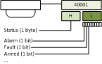
In order to create a data point that can extract parts of a register value to represent its properties, you must create a custom Object Model, along with Import rules telling the Importer which byte or bit to assign to a property. The Creating a Custom Object Model describes the process of creating a custom object model. In the following example, instances of a custom defined object model called FIRE_ZONE is created to represent the data points.
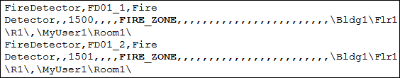
Scaling Factor
Specifies the following properties that define the value conversion.
- Min raw value – Lower end of the raw value scale
- Max raw value – Upper end of the raw value scale
- Min eng value – Lower end of the engineering value scale
- Max eng value - Upper end of the engineering value scale
Alarming
To configure a workstation alarm for a point, you must configure the following fields:
- AlarmClass: The alarm class to be enabled for an event.
- AlarmType: The condition for issuing an alarm. Refer to the table below.
- AlarmValue: The value, or range of values, for which an alarm is to be issued.
- EventText: The text to display when the alarm is issued.
- NormalText: The text to display when the alarm ceases.
- UpperHysteresis: The upper range for the alarm value; beyond which alarms will be generated.
- LowerHysteresis: The lower range for the alarm value; below which alarms will be generated.
Alarm Type Operators and Their Meanings | |||
AlarmType Operators | Operand | Meaning | Applicable Alarm Category |
OR | = | Equal to (only for binary points) | Discrete |
EQ | || | OR | |
NE | !|| | NOR | |
BET | .. | In the range of two values | |
NBET | !.. | Not in the range of the two values | |
LT | < | Less than | Continuous |
LE | <= | Less than or equal to | |
GT | > | Greater than | |
GE | >= | Greater than or equal to | |
Error Conditions for Workstation Alarms
- Supported alarm type values are: EQ (equal), NE (not equal), LT (less than), LE (less than or equal), GT (greater than), GE (greater than or equal), BET (between), NBET (not between).
- EQ (equal to) is the only supported alarm type value for binary (Boolean) points.
- Only one alarm can be specified for binary (Boolean) points.
- Alarm configuration is ignored if discrete and continuous alarms are mixed. Refer to the table for categorization of alarm types.
- Alarm configuration is ignored if the number of alarm values and range is inconsistent in the alarm configuration columns.
- Alarm types BET and NBET are not supported for items with state texts.
The following examples illustrate single and multiple alarm configurations.
Alarm Configuration for a Single Alarm
The CSV configuration for a single alarm is as follows.
After importing the above CSV, the alarm will be configured as follows.
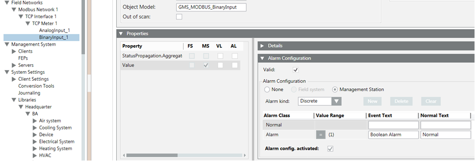
Alarm Configuration for Multiple Alarms
The CSV configuration for multiple alarm is as follows.
After the import of the above CSV, the alarm configuration looks like this.
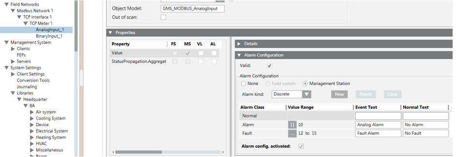
Value Attributes
The Min, Max, Resolution, Unit data in the CSV can be configured as follows:
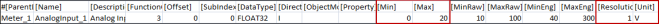
The Min, Max, Resolution, Unit, and StateTextGroups cannot be configured for the blob datatype.
After the import, the Details expander reflects the changes.
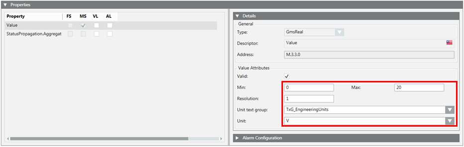
State Texts for Enumerated and Boolean Types
Enumerated and Boolean data types usually require specific texts to be displayed instead of raw values. For example, the 0 / 1 of Boolean type must be represented as Start/Stop. This is achieved by specifying the texts in the StateText field. The discrete state texts are separated by the $ character.
The StateText attribute in a CSV for a Boolean point can be configured as follows:
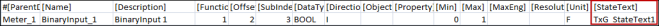
Since a Boolean point can have a maximum of two states, the text group also has two states. These two states correspond to the two value range of Minimum and Maximum. After the CSV import, the Details expander displays as follows:
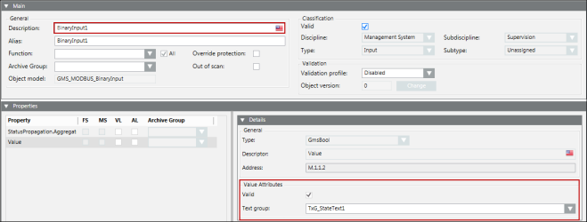
To represent more than two states, you must configure the StateText attribute of a multi state point. In the CSV file example shown below, the text group has three states’ State1, State2, and State3.
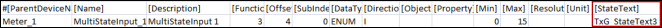
After the CSV import, the Details expander displays as follows:
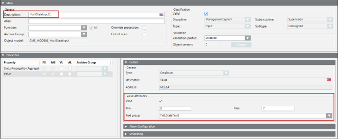
Now, from the drop-down list, you can select the state from the list of states. Selecting a state will write the corresponding value to the point. The range of this value is between the minimum and maximum specified in the CSV file.
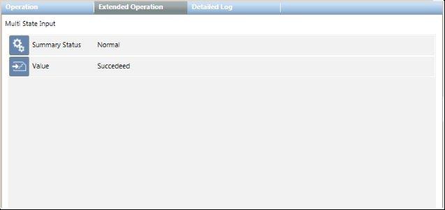
Afterimporting the CSV for such a point, its text group is also added to the list of text groups. The following image displays the Text Group Editor showing the three state texts.
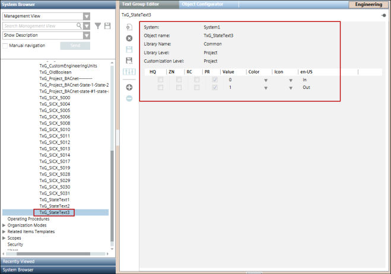
The Importer verifies the text group names either from the text groups defined in the Text section in the same CSV file, or from the text groups present in the system.
StateTexts are applicable only for Multistate and Binary points since floating point values do not have integral states. However, if a CSV file contains StateText for points with a FLOAT32/FLOAT64 data type, the Importer ignores the StateText data for that point.
During re-import, the Importer replaces an existing text group of the point with the new text group mentioned in the CSV file.
Dependency of StateTexts on the Minimum and Maximum Values of a Point
During the parsing of a CSV file, the StateTexts are verified with the minimum and maximum values given in the CSV file. The Importer can fail in parsing StateTexts by importer for the following reasons:
- The minimum and maximum values are invalid (for example, format error, non-integral values).
- The interval between the minimum and the maximum value is not equal to the number of StateTexts provided in the entry.
- The minimum is equal to maximum.
In such cases, a warning message is added to the log file. However, the parsing continues ignoring the StateText values of such a point.
Enumerated and Boolean data types usually require specific texts to be displayed instead of raw values. For example, the 0 / 1 of Boolean type must be represented as Start/Stop. This is achieved by specifying the texts in the StateText field. The discrete state texts are separated by the $ character.
Variations of Data Point Hierarchy
In the management station, data points can be viewed in various hierarchies. Hierarchies reflect the structural organization of data points. The three principal hierarchies used are Physical, Logical, and User. Physical hierarchy represents the data points as a part of the hardware device, and hence they appear as a flat list of data point objects under a device node. In addition to representing the physical containment of data points, it is often required to give a logical or technical structuring to the data points. For example, a digital input and a digital output data point may logically represent the status and command of a pump. In this case, it is possible to put the two data points as children of an aggregator data point representing the pump. This can be done by specifying the Logical hierarchy path. The path can have multiple elements separated by a specific delimiting character. Each element of the path is then translated into a hierarchy. The following figure illustrates this translation.
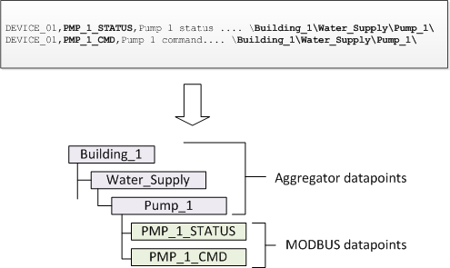
Note that in the above example, both data points have the same hierarchy configuration; this results in both data points appearing as the child of the same parent (Pump_1). Though not specific to Modbus integration, it is worth mentioning, at this point, you can assign a Function to the aggregator node to give it a meaningful meaning. For example, assigning a suitable Function to the Pump_1 node enables the node to be used in graphics, along with suitable symbol, to represent the collection of data points contained by it.
Logical and User Hierarchy
Consider the six points where logical and user hierarchies are defined as follows:
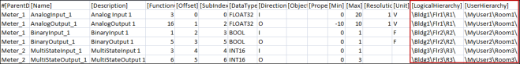
Note that the delimiter used as a level separator is the backslash ‘\’. The hierarchy string (for both Logical and User Hierarchies) must start and end with the backslash ‘\’.
NOTE:
In the CSV file, if you just enter the \ as the delimeter, then the corresponding object is added directly below the root node of the corresponding view.
After the Import, the logical view of the System Browser hierarchy displays as follows:
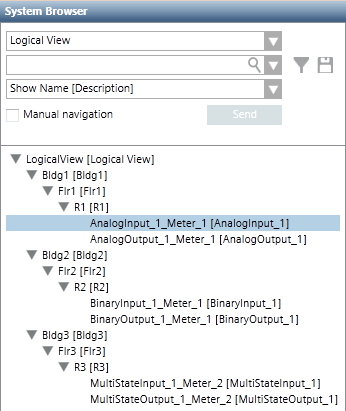
The user-defined view of the System Browser hierarchy displays as follows:
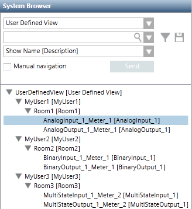
Modbus Function Code
The Modbus protocol defines a set of function code commands used to read from or write to coils/registers (memory locations) of field devices, and thereby monitor and control them. The Modbus driver supports all the Modbus function codes listed in the following table. It uses them to interoperate with the Modbus devices.
Modbus Function Code | |
Function Code | Register Type |
1 | Read Coil |
2 | Read Discrete Inputs |
3 | Read Holding Registers |
4 | Read Input Registers |
5 | Write Single Coil |
6 | Write Single Register |
15 | Write Multiple Coils |
16 | Write Multiple Registers |
7 | Read Exception Status |
24 | Read FIFO Queue |
NOTE:
A coil is a single bit that can be both read and written. A discrete input is a single bit that is read-only. A register is two bytes (16 bits). An input register is a read-only register. A holding register is a read-write register.
Function Mapping
If you do not add a Function name in the CSV definition of the point, the Importer loads the default values from the object model definition to the point.
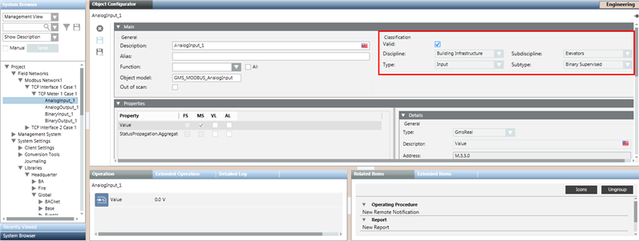
When you select the object model of the Modbus point, you can verify that the function attributes of the point are set from the selected object model.
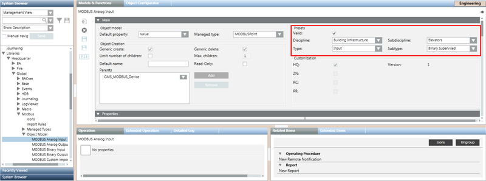
After an appropriate function has been added to Import Rules, it can be referred in the CSV by adding the Function Key in the Function field of the CSV entry.
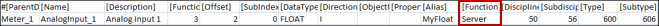
After the import, the Object Configurator looks like the following:
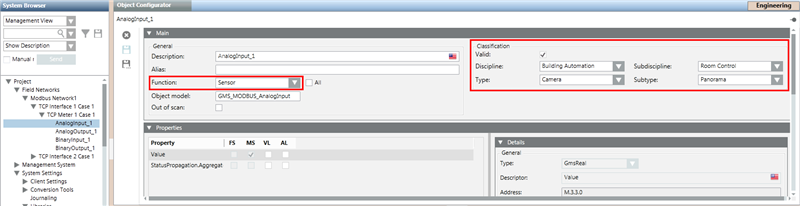
Monitor Modbus Objects in the System
The management station monitors the number of Modbus objects in the system to ensure that the number of these objects does not exceed the defined limits for system objects. The monitoring is using properties such as System Objects Limit, System Load, System Objects, and Notification Threshold. These properties are displayed in the Extended Operations tab when you select the Main Server Object from the Management View. Depending on the situation, the management station performs any of the following:
- Issues warnings when you are approaching the maximum permitted limit.
- Generates an alarm if the system objects exceed the maximum permitted limit.
- Prevents importing Modbus objects if the import activity can cause the system objects to exceed the maximum permitted limit.
The maximum permitted limit is defined by the System Objects Limit property.
The following scenarios provide a better understanding of the monitoring activity:
- If the number of Modbus objects is below both the system limits (defined by the System Objects Limit property) and the safety threshold (defined by the Notification Threshold property), then the System Load property indicates Normal and displays in the Extended Operation tab.
NOTE: If you want to import Modbus interfaces, devices or points, the system will permit this only if the System Objects Limit property and Notification Threshold property do not exceed their defined limits. - If the number of Modbus objects is between the system limits (defined by the System Objects Limit property) and the safety threshold (defined by the Notification Threshold property), then the System Load property indicates Warning and displays in the Extended Operation tab.
NOTE: If the import operation exceeds the safety threshold, a warning message informs you how close you are to the limit (for example, 90%) and you can then decide whether to proceed with the import or not. - If the number of Modbus objects exceeds the system limits (defined by the System Objects Limit property), then the System Load property indicates Alarm and displays in the Extended Operation tab.
NOTE: If the import operation exceeds the system limits, an error message displays to inform you that the import operation will not start.
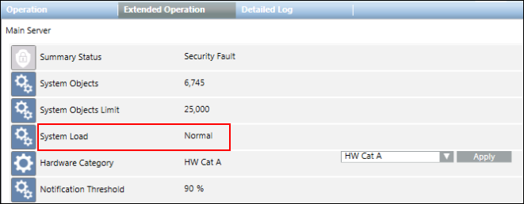
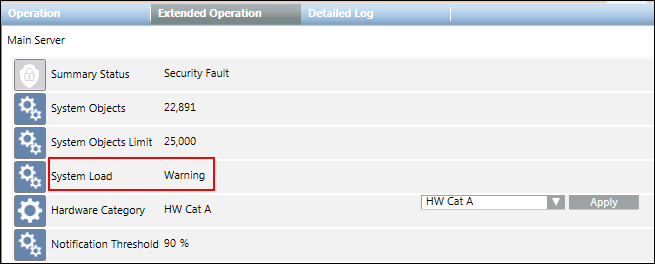
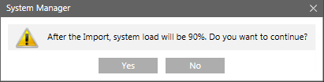
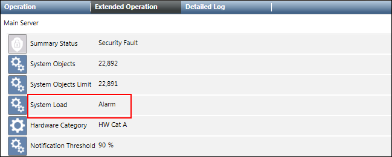
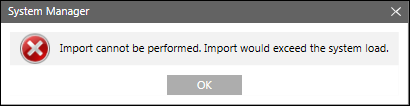
Config File Entries
The following configuration parameters can be set under the mod section of the config filelocated at [installation drive:]\[installation folder]\[project]\config.
NOTE: You must add the mod section to the config file.
- To force all driver instances to use little endian byte ordering
[mod]
littleEndianRegister=1
- In case the config parameter must be specific for the driver instance, it can be placed under [mod_n] where n is the instance number. For example, if the config parameter is to be applied only to driver instance number 1, then the mod section must be specified as follows:
[mod_1]
littleEndianRegister=1
- In case of a FEP installation, in order to enable a Modbus driver to work with PAC meters, you must explicitly add the [mod] section in the config file and add an entry for the littleEndianRegister parameter and set its value to 0. This is essential because in case of FEP installations, the entry for the littleEndianRegister parameter is not added during project creation in the config file. You can add the [mod] section in the file as follows:
[mod]
littleEndianRegister=0
However, in case the value of the littleEndianRegister parameter is to be set for a specific driver instance number, then you must add the [mod] section in the config file as follows:
[mod_<drivernumber>]
littleEndianRegister=0
For example, to set the value of the littleEndianRegister parameter for driver number 3, you must add the following entry:
[mod_3]
littleEndianRegister=0
NOTE:
In order to apply the configuration, you must restart the Modbus driver.
- To specify the number of failed responses until which the connection stays open rather than closing after the first failed response, for example, to ensure that the connection stays open until 3 failed responses rather than closing after the first failed response, you must add the following entry:.
[mod]
maxRequestRetryNumber = 3
The following table lists all possible configuration parameters.
Entry | Type | Default | Range | Description |
aliveInterval | unsigned | 10 [s] | >= 0 | Specifies an alive interval for the driver in seconds. |
aliveTimeoutMsg | unsigned | 3 1 | — | Specifies the function code and the reference number for the alive request. The aliveTimeoutMsg parameter consists of 2 numbers. These 2 numbers must be separated with a blank character. The first number indicates the Modbus Function Code that should be used (for example, 1 = Read Coils). The second number indicates the Register number on the device. Both numbers must be set to values that are supported by all involved Modbus devices. NOTE: Do not use this setting at the driver level, except for very special cases. |
addUnicosMarker | unsigned | –1 | –1..65535 | Defines the reference number that is used by the driver to decide whether it is a Modbus or a UNICOS frame. The entry is deactivated by default. |
idleCloseTimeout | unsigned | 0 [s] | >= 0 | The driver closes the connection to the PLC if the connection is idle for the specified time (in seconds). This is done only for connections in master mode. |
littleEndianRegister | bool | 1 | 0|1 | Defines whether 16 Bit register is organized according to little endian or big endian. By default the little endian register is transmitted first. Note:
|
maxConnRetryNumber | unsigned | 0 | >= 0 | Specifies how many times the driver retries to establish a connection when sending a telegram, if the connection request fails. |
maxGap | uint | 16 | 0..100 | If the difference of two consecutive address reference numbers is less than the value in maxGap, then these addresses are grouped together in one poll block. If not, then a second poll block is created. This entry provides the poll query optimization. |
maxPendingRequests | unsigned | 1 | 1..8 | The maximum number of outstanding requests without response. The entry can be used for sending more requests in advance in order to speed up the communication. If you set the value of the entry higher than 1, you must verify that the PLCs controlled by the driver can handle several requests. |
maxQueueSize | int | 256 | - | Defines the size of the request queue for master mode. For example maxQueueSize = 1000 |
maxRetryNumber | unsigned | 0 | >= 0 | Specifies the number of retries for a connection establishment before the connection is marked as dead. Default: 0, that is, after the first failure the driver is continuously endlessly retrying to establish the connection. |
onlyActivePolls | bool | 0 | 0|1 | onlyActivePolls = 1specifies that only the active driver polls in a redundant system. The default value is 0 (both drivers poll the PLC). |
pollOptForBlob | bool | 1 | 0|1 | Defines whether a poll query optimization is used for blobs |
requestDelay | uint | 0 | >= 0 | Time (in ms) which must be between two requests. The value should not be set too high, because it reduces data throughput. This entry is only relevant if gateways are involved. |
tcpConnectTimeout | unsigned | 2000 [ms] | >= 1000 | Connection timeout. (in ms) When the connection is established, the driver waits until the connection is initialized and until an acknowledgement is received from the PLC. If the driver does not receive the acknowledgement within a timeout, the driver re-establishes the connection. The timeout is specified using the following config entry |
maxRequestRetryNumber | unsigned | 0 | >=0 | Indicates the number of failed responses until which the connection stays open rather than closing after the first failed response, for example if maxRequestRetryNumber is set to 3, the connection stays open until 3 failed responses rather than closing after the first failed response. A typical use case where this setting is useful is on the observation of failure in case several Modbus RTU devices are connected to a single Modbus gateway. |
tcpReceiveBufferSize | unsigned | 0 | >=300 | With this entry the TCP receive buffer size can be adjusted. This is only needed in exceptional cases if an old Modbus device cannot handle modern operating system TCP windows size setting. |